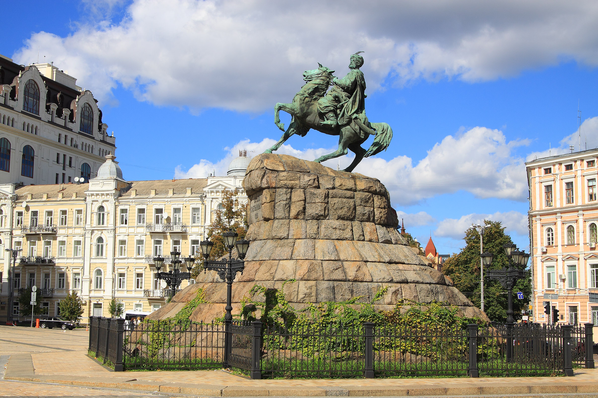

Kyiv Explorer
Home
Kyiv history
Where to go
Bohdan Khmlnytsky Monument
Dedicated to Bohdan Khmelnytsky, the first Hetman of Zaporizhian Host. It was built in 1888 - it is one of the oldest sculptural monuments, a dominating feature of Sophia Square and one of the city's symbols. The monument is located almost in the middle of the Sophia Square (formerly the main city's square) on the axis that unites both belltowers of the Sophia Cathedral and the St.Michael's Monastery. Here on 23 December 1648 residents of Kyiv met Khmelnytsky leading his Cossacks' regiments by entering the city through the Golden Gates soon after the victory over Polish Army at the battle of Pyliavtsi.
